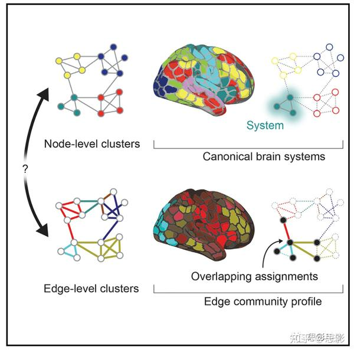
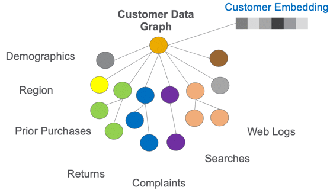
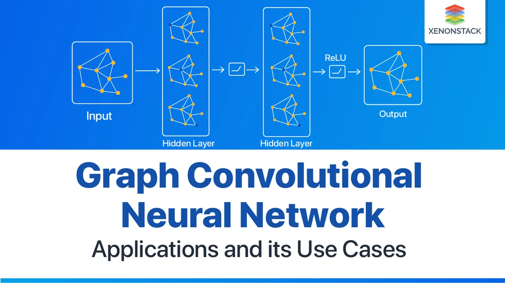

Graph Neural Networks in Action
Authors: Keita Broadwater
Publication Year: 2023
Summary: A practical guide to powerful deep learning models based on graphs! Learn how to create modern graph neural networks for recommendation systems, molecular modeling, and more. In "Graph Neural Networks in Action" you will learn how to: Train and deploy a graph neural network Create node embeddings Use graph neural networks at scale for very large datasets Build a graph data pipeline Design a graph data schema Understand graph neural network classification Manage graph data with NetworkX "Graph Neural Networks in Action" teaches you how to build powerful deep learning models for processing data with graphs.

Rating: 4.8/5 (540 reviews)
Chapter 1: Discovering Graph Neural Networks
The chapter "Discovering Graph Neural Networks" focuses on the introduction and understanding of Graph Neural Networks (GNNs), a machine learning technique that processes data which can be represented as a graph, that is, a set of nodes and edges. GNNs allow for the modeling of complex relationships and data structures, such as social networks, biological systems, or communication networks. The chapter covers the basic principles of how they operate, how GNNs process graph data, and their importance in solving problems that require the analysis of structured relationships.
Image 1: Knowledge from various fields of science and industry can be expressed as graphs.
Return to the Table of ContentsChapter 2: System Design and Data Flow
The chapter "System Design and Data Flow" focuses on how systems are designed and organized for effective data management in graph and neural network applications. It explains the basic principles of designing a system that can handle large volumes of data and transform them appropriately for input into machine learning models. It covers data pipeline techniques that ensure the cleanliness, speed, and accuracy of data at every processing stage, from initial collection to model training, thus providing the foundations for the successful development and application of graph neural networks.

Image 2: ETL Pipeline
Return to the Table of ContentsChapter 3: Graph Embeddings
The chapter "Graph Embeddings" focuses on graph embedding techniques, which convert nodes, edges, or entire graphs into low-dimensional vectors. These representations preserve important structural and intrinsic information of the original graph, making it easier for machine learning to work on them. Embeddings are used in applications such as link prediction, node clustering, and classification, and they form the foundation for more complex graph models like Graph Neural Networks (GNNs).
Image 3: Customer Data Graph
Return to the Table of ContentsChapter 4: Graph Convolutional Networks (GCNs) & GraphSage
The chapter "Graph Convolutional Networks (GCNs) & GraphSage" focuses on two important methods for analyzing graph data: Graph Convolutional Networks (GCNs) and GraphSage. GCNs extend the traditional convolutional architecture to operate on graphs, allowing for the modeling of relationships between nodes (e.g., users or items) through the structure of their connections. On the other hand, GraphSage introduces a feature learning mechanism that leverages local information and neighbors of nodes to generalize to new, unseen nodes. The chapter includes techniques for training and using these models, as well as their applications in problems such as node classification and link prediction.
Image 4: Example of GCN
Return to the Table of Contents